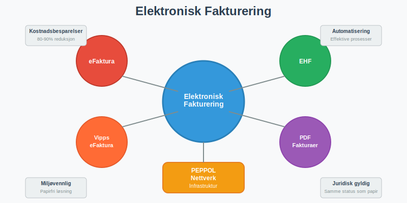
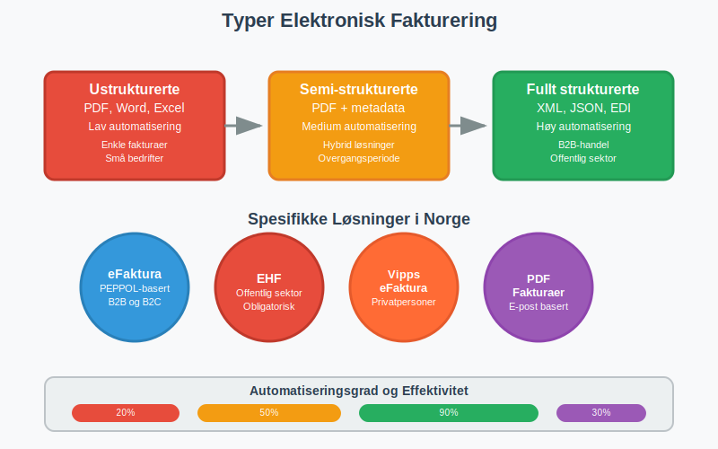
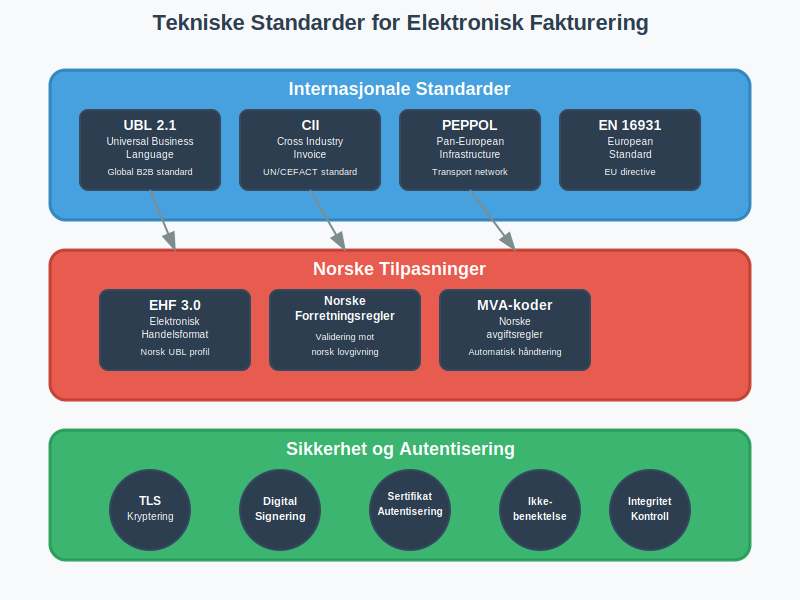
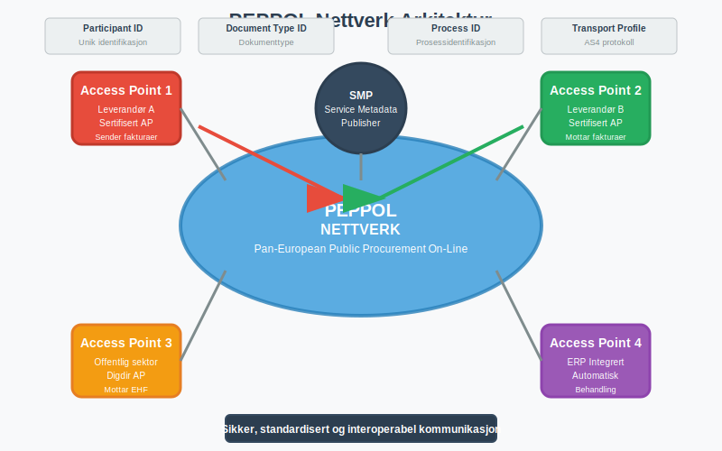
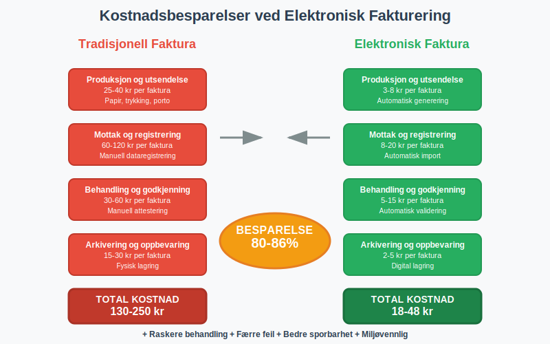
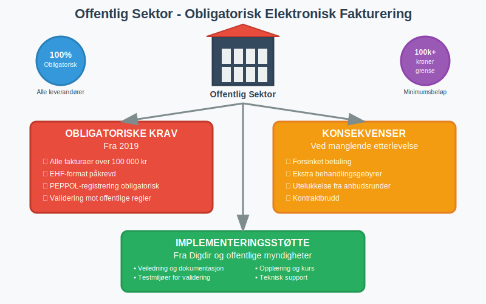
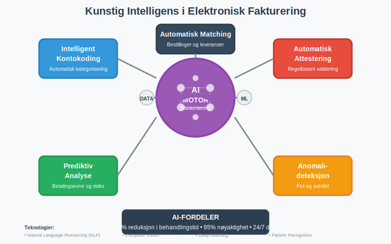
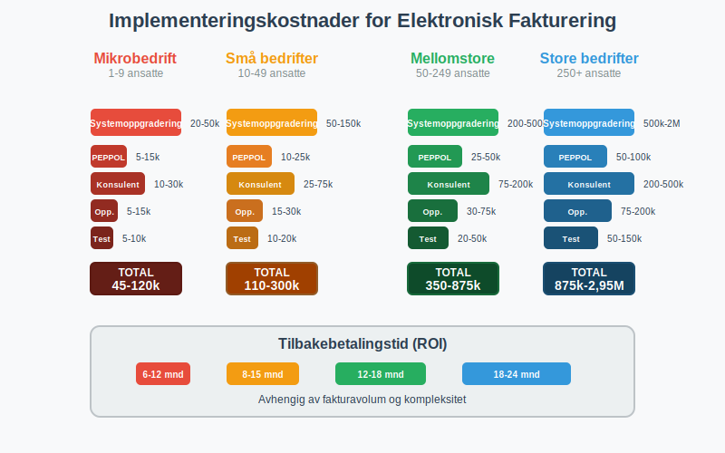

Elektronisk fakturering er et samlebegrep for alle digitale metoder for å sende, motta og behandle fakturaer elektronisk.
For å maksimere effekten av elektronisk fakturering, velg et fakturaprogram med innebygde integrasjoner, maler og automatiserte arbeidsflyter. Dette omfatter alt fra enkle PDF-fakturaer sendt via e-post til avanserte strukturerte fakturaformater som eFaktura, EHF og Vipps eFaktura.
En viktig del av både eFaktura og EHF er å bruke ELMA for å hente og validere mottakeres digitale adresser.
Som en sentral del av fintech (finansteknologi), har elektronisk fakturering revolusjonert måten norske bedrifter og privatpersoner håndterer fakturabehandling på, og er i dag en integrert del av moderne regnskapsføring. Fakturering gir en introduksjon til hele prosessen med å utstede og følge opp fakturaer.

Utviklingen av elektronisk fakturering i Norge har vært drevet av både teknologiske fremskritt og myndighetenes digitalisering av offentlig sektor. I dag er elektronisk fakturering ikke bare en mulighet, men en nødvendighet for mange bedrifter, spesielt de som leverer til offentlig sektor hvor det er obligatorisk å bruke elektroniske fakturaformater.
Seksjon 1: Typer Elektronisk Fakturering
Elektronisk fakturering omfatter flere ulike teknologier og formater, hver med sine spesifikke bruksområder og fordeler.

1.1 Strukturerte vs. Ustrukturerte Formater
Elektroniske fakturaer kan deles inn i to hovedkategorier basert på hvor strukturerte dataene er:
| Type | Format | Automatiseringsgrad | Bruksområde |
|---|---|---|---|
| Ustrukturerte | PDF, Word, Excel | Lav | Enkle fakturaer, små bedrifter |
| Semi-strukturerte | PDF med strukturerte data | Medium | Hybrid løsninger |
| Fullt strukturerte | XML, JSON, EDI | Høy | B2B-handel, offentlig sektor |
1.2 eFaktura - Den Norske Standarden
eFaktura er Norges primære system for elektronisk fakturering mellom bedrifter og til privatpersoner. Systemet bygger på PEPPOL-nettverket og sikrer interoperabilitet mellom ulike systemer og leverandører.
Hovedtrekk ved eFaktura:
- Basert på internasjonale standarder (UBL 2.1, CII)
- Juridisk likestilt med papirfakturaer
- Automatisk validering og behandling
- Integrert med norske regnskapssystemer
1.3 EHF - Elektronisk Handelsformat
EHF (Elektronisk Handelsformat) er den norske tilpasningen av UBL-standarden, spesielt utviklet for offentlig sektor og norske forretningsprosesser.
EHF-spesifikasjoner:
- Basert på UBL 2.1 med norske tilpasninger
- Obligatorisk for leverandører til offentlig sektor
- Støtter norske MVA-regler og regnskapskrav
- Valideres mot norske forretningsregler
1.4 Vipps eFaktura
Vipps eFaktura er en forbrukerrettet løsning som gjør det enkelt for privatpersoner å motta og betale fakturaer direkte i Vipps-appen.
Funksjoner i Vipps eFaktura:
- Direkte mottak av fakturaer i Vipps-appen
- Enkel betaling med ett trykk
- Automatisk arkivering av betalte fakturaer
- Integrasjon med AvtaleGiro
Disse betalingsløsningene er deler av det bredere spekteret av moderne betalingstjenester som muliggjør sømløs integrasjon mellom fakturaer og betalingsprosesser.
Seksjon 2: Tekniske Standarder og Protokoller
Elektronisk fakturering bygger på en rekke internasjonale og nasjonale standarder som sikrer interoperabilitet og juridisk gyldighet.

2.1 Internasjonale Standarder
| Standard | Beskrivelse | Bruksområde |
|---|---|---|
| UBL 2.1 | Universal Business Language | Global standard for B2B-fakturaer |
| CII | Cross Industry Invoice | UN/CEFACT standard |
| PEPPOL | Pan-European Public Procurement On-Line | Europeisk infrastruktur |
| EN 16931 | Europeisk faktureringsstandard | EU-direktiv for elektronisk fakturering |
2.2 Norske Tilpasninger
Norge har utviklet spesifikke tilpasninger av internasjonale standarder:
- EHF 3.0 - Norsk profil av UBL 2.1
- Norske forretningsregler - Validering mot norsk lovgivning
- MVA-koder - Tilpasset norske avgiftsregler
- Organisasjonsnummer - Norsk identifikasjon av juridiske enheter
2.3 Sikkerhet og Autentisering
Elektronisk fakturering implementerer omfattende sikkerhetstiltak:
- TLS-kryptering for all kommunikasjon
- Digital signering av fakturaer
- Sertifikatbasert autentisering
- Ikke-benektelse gjennom kryptografiske bevis
- Integritetskontroll av fakturainnhold
Seksjon 3: Implementering og Infrastruktur
Implementering av elektronisk fakturering krever forståelse av både tekniske og organisatoriske aspekter.
3.1 PEPPOL-Nettverket
PEPPOL (Pan-European Public Procurement On-Line) er ryggraden i europeisk elektronisk fakturering:

PEPPOL-komponenter:
- Access Points - Sertifiserte tjenesteleverandører
- SMP (Service Metadata Publisher) - Katalog over deltakere
- Participant ID - Unik identifikasjon av bedrifter
- Document Type ID - Identifikasjon av dokumenttyper
3.2 Access Point-Leverandører
For å delta i PEPPOL-nettverket må bedrifter bruke en sertifisert Access Point-leverandør:
| Leverandør | Tjenester | Målgruppe |
|---|---|---|
| Difi/Digdir | Offentlig Access Point | Offentlig sektor |
| Private leverandører | Kommersielle tjenester | Private bedrifter |
| ERP-integrerte | Innebygd i regnskapssystemer | Alle størrelser |
3.3 Systemintegrasjon
Elektronisk fakturering integreres typisk med eksisterende forretningssystemer:
- ERP-systemer - Direkte integrasjon med regnskapsføring
- Faktureringssystemer - Spesialiserte fakturaløsninger med digitale fakturamaler
- E-handelssystemer - Automatisk fakturering ved salg
- Økonomisystemer - Integrasjon med bilagsføring
Moderne implementeringer drar stor nytte av API-integrasjon og automatisering for å sikre sømløs dataflyt mellom elektronisk fakturering og regnskapssystemer, noe som eliminerer manuell dataregistrering og reduserer feilrisiko betydelig.
Seksjon 4: Fordeler og Gevinster
Elektronisk fakturering gir omfattende fordeler for både avsendere og mottakere av fakturaer.
4.1 Økonomiske Besparelser
Studier viser betydelige kostnadsreduksjoner ved overgang til elektronisk fakturering:

| Prosess | Tradisjonell faktura | Elektronisk faktura | Besparelse |
|---|---|---|---|
| Produksjon og utsendelse | 25-40 kr | 3-8 kr | 75-85% |
| Mottak og registrering | 60-120 kr | 8-20 kr | 80-90% |
| Behandling og godkjenning | 30-60 kr | 5-15 kr | 75-85% |
| Arkivering og oppbevaring | 15-30 kr | 2-5 kr | 85-90% |
| Total per faktura | 130-250 kr | 18-48 kr | 80-86% |
Eliminering av Fakturagebyr
En betydelig økonomisk fordel med elektronisk fakturering er eliminering av fakturagebyr. Mange leverandører krever tilleggsgebyrer for papirfakturaer, men må tilby elektroniske alternativer gratis:
- Papirfakturagebyr: 25-50 kr per faktura elimineres
- Ekspedisjonsgebyrer: Reduserte kostnader for spesiell håndtering
- Administrative gebyrer: Lavere behandlingskostnader
For bedrifter med høyt fakturavolum kan eliminering av fakturagebyr alene utgjøre betydelige årlige besparelser.
4.2 Prosesseffektivisering
Elektronisk fakturering automatiserer store deler av fakturabehandlingen:
- Eliminering av manuell dataregistrering
- Automatisk validering mot forretningsregler
- Raskere behandlingstid fra mottak til betaling
- Reduserte feil og reklamasjoner
- Forbedret attestering og godkjenningsflyt
- Integrert bilagsbehandling med full sporbarhet og automatisk arkivering
For bedrifter som mottar både elektroniske og papirbaserte fakturaer kan fakturatolk-teknologi brukes for å automatisere behandlingen av alle fakturatyper. Denne teknologien kombinerer OCR og kunstig intelligens for å lese og tolke fakturaer automatisk, uavhengig av format.
4.3 Miljøgevinster
Digitalisering av fakturabehandling gir positive miljøeffekter:
- Redusert papirforbruk - Eliminering av papirfakturaer
- Mindre transport - Ingen fysisk distribusjon
- Lavere energiforbruk - Digitale prosesser vs. fysisk håndtering
- Redusert lagring - Digital arkivering erstatter fysiske arkiver
Seksjon 5: Juridiske Aspekter og Compliance
Elektronisk fakturering må oppfylle de samme juridiske kravene som tradisjonelle fakturaer.
5.1 Bokføringsloven og Forskrifter
Elektroniske fakturaer må oppfylle bokføringslovens krav:
- Sporbarhet - Mulighet for å følge transaksjoner
- Integritet - Sikring mot endringer
- Tilgjengelighet - Lesbarhet gjennom oppbevaringsperioden
- Autentisitet - Bekreftelse av opprinnelse
5.2 MVA-Behandling
Elektroniske fakturaer må inneholde korrekt MVA-informasjon:
- MVA-koder i henhold til norske regler
- Beregningsgrunnlag for hver MVA-sats
- Totale MVA-beløp per sats og samlet
- Fritak og unntak korrekt markert
- Fjernleverbare tjenester har spesielle stedsbestemmelsesregler for MVA
5.3 Oppbevaringsplikt
Elektroniske fakturaer må oppbevares i henhold til bokføringsforskriften:
- Oppbevaringstid: Minimum 5 år fra regnskapsårets slutt
- Format: Lesbart og søkbart format
- Tilgjengelighet: Umiddelbar tilgang for kontroll
- Sikkerhet: Beskyttelse mot tap og endring
Seksjon 6: Offentlig Sektor og Pålagte Krav
Den norske stat har innført omfattende krav til elektronisk fakturering i offentlig sektor.
6.1 Obligatorisk Elektronisk Fakturering
Fra 2019 er det obligatorisk å sende elektroniske fakturaer til offentlig sektor:

Krav til leverandører:
- Alle fakturaer over 100 000 kr må sendes elektronisk
- EHF-format er påkrevd
- PEPPOL-registrering er obligatorisk
- Validering mot offentlige forretningsregler
6.2 Sanksjoner og Konsekvenser
Manglende etterlevelse kan få alvorlige konsekvenser:
- Forsinket betaling på grunn av manuell behandling
- Ekstra behandlingsgebyrer fra offentlige innkjøpere
- Utelukkelse fra fremtidige anskaffelser
- Kontraktbrudd i alvorlige tilfeller
6.3 Implementeringsstøtte
Offentlige myndigheter tilbyr støtte for implementering:
- Veiledning og dokumentasjon fra Digdir
- Testmiljøer for validering av fakturaer
- Opplæring og kurs for leverandører
- Teknisk support gjennom implementeringsfasen
Seksjon 7: Privatmarkedet (B2C) og B2B-Handel (Hva er B2C? og Hva er B2B?)
Elektronisk fakturering vokser raskt også i privatmarkedet, drevet av effektivitetsgevinster og konkurransefordeler.
7.1 Adopsjon i Næringslivet
Norske bedrifter tar i økende grad i bruk elektronisk fakturering:
| Bedriftsstørrelse | Adopsjon 2020 | Adopsjon 2024 | Vekst |
|---|---|---|---|
| Store bedrifter (>250 ansatte) | 65% | 85% | +31% |
| Mellomstore (50-249 ansatte) | 35% | 60% | +71% |
| Små bedrifter (10-49 ansatte) | 15% | 35% | +133% |
| Mikrobedrifter (<10 ansatte) | 5% | 18% | +260% |
7.2 Drivere for Adopsjon
Hovedårsakene til økt bruk av elektronisk fakturering:
- Kostnadsbesparelser - Direkte reduksjon i behandlingskostnader
- Konkurransefordeler - Raskere og mer effektive prosesser
- Kundekrav - Kunder forventer elektroniske løsninger
- Leverandørkrav - Store kunder krever elektronisk fakturering
- Teknologiutvikling - Enklere implementering og lavere kostnader
7.3 Bransjespesifikke Løsninger
Ulike bransjer har utviklet spesialiserte løsninger:
- Detaljhandel - Integrasjon med kassasystemer og dagsoppgjør
- Byggebransjen - Håndtering av komplekse prosjektfakturaer
- Helsesektoren - Integrasjon med pasientadministrative systemer
- Transport - Automatisk fakturering basert på leveranser
Seksjon 8: Teknologiske Trender og Fremtiden
Elektronisk fakturering utvikler seg kontinuerlig med nye teknologier og funksjoner.
8.1 Kunstig Intelligens og Maskinlæring
AI-teknologi revolusjonerer fakturabehandling:

AI-applikasjoner:
- Intelligent kontokoding basert på historiske data
- Automatisk attestering gjennom regelbasert validering
- Prediktiv analyse for betalingsevne og risiko
- Automatisk matching mot bestillinger og leveranser
- Anomalideteksjon for å identifisere feil og svindel
8.2 Blockchain og Distribuerte Systemer
Blockchain-teknologi kan forbedre sikkerhet og sporbarhet:
- Uforanderlig sporbarhet av alle transaksjoner
- Smart contracts for automatisk betaling ved leveranse
- Distribuert arkivering for økt sikkerhet
- Redusert behov for mellommenn og validering
8.3 Internet of Things (IoT) og Automatisering
IoT-teknologi muliggjør automatisk fakturering:
- Sensorbasert fakturering - Automatisk registrering av forbruk
- Leveranseverifisering - IoT-sensorer bekrefter leveranser
- Prediktivt vedlikehold - Automatisk fakturering av servicetjenester
- Supply chain-integrasjon - Sømløs fakturaflyt gjennom verdikjeden
Seksjon 9: Implementeringsguide
For bedrifter som ønsker å implementere elektronisk fakturering, er det viktig å følge en strukturert tilnærming.
9.1 Behovsanalyse og Planlegging
Før implementering bør bedriften gjennomføre en grundig analyse:
Kartlegging av nåsituasjon:
- Fakturavolum og -typer
- Eksisterende systemer og integrasjoner
- Leverandør- og kundebase
- Kostnader ved dagens løsning
Målsetting og krav:
- Ønskede gevinster og besparelser
- Tekniske krav og begrensninger
- Juridiske og compliance-krav
- Tidsramme for implementering
9.2 Leverandørvalg og Teknologi
Valg av riktig teknologi og leverandører er kritisk:
| Vurderingskriterier | Viktighet | Beskrivelse |
|---|---|---|
| Teknisk kompetanse | Høy | Erfaring med PEPPOL og norske standarder |
| Systemintegrasjon | Høy | Kompatibilitet med eksisterende ERP |
| Support og service | Høy | Norskspråklig support og dokumentasjon |
| Skalerbarhet | Medium | Mulighet for vekst og utvidelse |
| Kostnader | Medium | Konkurransedyktige priser og transparente modeller |
| Sertifiseringer | Høy | Godkjent av relevante myndigheter |
9.3 Implementeringsprosess
En typisk implementering følger disse fasene:
-
Forberedelse (2-4 uker)
- Systemkartlegging og kravspesifikasjon
- Leverandørvalg og kontraktsinngåelse
- Prosjektorganisering og ressursallokering
-
Konfigurasjon (4-8 uker)
- Systemoppsett og integrasjon
- PEPPOL-registrering og sertifisering
- Testmiljø og validering
-
Testing (2-4 uker)
- Teknisk testing av fakturaformater
- Prosesstest med utvalgte partnere
- Brukertest og opplæring
-
Produksjonssetting (1-2 uker)
- Overgang til produksjonsmiljø
- Overvåking og finjustering
- Fullskala utrulling
9.4 Opplæring og Change Management
Vellykket implementering krever fokus på mennesker og prosesser:
- Brukeropplæring - Grundig opplæring av alle berørte medarbeidere
- Prosessdokumentasjon - Oppdaterte rutiner og arbeidsflyter
- Change management - Håndtering av motstand og endringsprosesser
- Kontinuerlig forbedring - Løpende optimalisering av prosesser
Seksjon 10: Kostnader og Lønnsomhet
Implementering av elektronisk fakturering krever initial investering, men gir betydelige besparelser over tid.
10.1 Implementeringskostnader
Typiske kostnader varierer med bedriftsstørrelse og kompleksitet:

| Kostnadskategori | Mikrobedrift | Små bedrifter | Mellomstore | Store bedrifter |
|---|---|---|---|---|
| Systemoppgradering | 20-50k | 50-150k | 200-500k | 500k-2M |
| PEPPOL-registrering | 5-15k | 10-25k | 25-50k | 50-100k |
| Konsulentbistand | 10-30k | 25-75k | 75-200k | 200-500k |
| Opplæring | 5-15k | 15-30k | 30-75k | 75-200k |
| Testing | 5-10k | 10-20k | 20-50k | 50-150k |
| Total | 45-120k | 110-300k | 350-875k | 875k-2,95M |
10.2 Driftskostnader
Løpende kostnader for elektronisk fakturering:
- Access Point-avgifter: 1-8 kr per sendt/mottatt faktura
- Systemvedlikehold: 10-20% av systemkostnad årlig
- Support og drift: Varierer med kompleksitet og volum
- Oppdateringer: Kostnader for nye versjoner og standarder
10.3 Lønnsomhetsberegning
For en mellomstore bedrift med 2000 fakturaer månedlig:
Årlige besparelser:
- Reduserte behandlingskostnader: 1,5-3,0 millioner kr
- Mindre feil og reklamasjoner: 200-500 tusen kr
- Raskere betalingsflyt: 300-800 tusen kr
- Reduserte arkiveringskostnader: 100-200 tusen kr
- Total årlig besparelse: 2,1-4,5 millioner kr
Tilbakebetalingstid: Typisk 3-12 måneder avhengig av fakturavolum og kompleksitet.
Seksjon 11: Utfordringer og Risikofaktorer
Implementering av elektronisk fakturering kan møte ulike utfordringer som må håndteres proaktivt.
11.1 Tekniske Utfordringer
- Systemintegrasjon - Kompleks integrasjon med eksisterende systemer
- Datamigrering - Overføring av historiske data og konfigurasjoner
- Standardkompleksitet - Forståelse av tekniske standarder og krav
- Sikkerhetsrisiko - Beskyttelse mot cyberangrep og datainnbrudd
11.2 Organisatoriske Utfordringer
- Motstand mot endring - Medarbeidere som foretrekker kjente prosesser
- Kompetansegap - Mangel på teknisk kunnskap og erfaring
- Prosessendringer - Behov for å redesigne arbeidsflyter
- Leverandørkoordinering - Sikre at partnere også implementerer elektronisk fakturering
11.3 Juridiske og Compliance-Risiko
- Regelverksendringer - Kontinuerlige oppdateringer av standarder og krav
- Revisjonsrisiko - Sikre at elektroniske fakturaer oppfyller alle krav
- Personvernrisiko - GDPR-compliance ved behandling av persondata
- Grenseoverskridende handel - Ulike krav i forskjellige land
Seksjon 12: Beste Praksis og Anbefalinger
Basert på erfaringer fra norske bedrifter som har implementert elektronisk fakturering.
12.1 Suksessfaktorer
Kritiske faktorer for vellykket implementering:
- Toppledelsesforankring - Klar støtte og prioritering fra ledelsen
- Tverrfaglig prosjektteam - Inkludering av IT, økonomi og forretningsområder
- Grundig planlegging - Detaljert prosjektplan med realistiske tidsrammer
- Pilotprosjekt - Start med begrenset omfang før full utrulling
- Kontinuerlig kommunikasjon - Regelmessig informasjon til alle berørte
12.2 Vanlige Fallgruver
Utfordringer å unngå:
- Undervurdering av kompleksitet - Teknisk implementering tar ofte lengre tid enn forventet
- Mangelfull testing - Utilstrekkelig testing kan føre til problemer i produksjon
- Dårlig change management - Neglisjering av menneskelige aspekter ved endring
- Leverandørrisiko - Avhengighet av én leverandør uten backup-planer
- Compliance-gap - Manglende forståelse av juridiske krav
12.3 Anbefalinger for Ulike Bedriftsstørrelser
Mikrobedrifter (1-9 ansatte):
- Start med enkle skybaserte løsninger
- Fokuser på integrasjon med eksisterende regnskapssystem
- Vurder outsourcing av teknisk drift
Små bedrifter (10-49 ansatte):
- Invester i opplæring av nøkkelpersonell
- Implementer trinnvis med pilotprosjekt
- Etabler rutiner for kontinuerlig forbedring
Mellomstore bedrifter (50-249 ansatte):
- Etabler dedikert prosjektteam
- Fokuser på prosessoptimalisering
- Implementer omfattende testing og validering
Store bedrifter (250+ ansatte):
- Utvikle detaljert implementeringsstrategi
- Invester i avanserte integrasjoner og automatisering
- Etabler senter for kompetanse og support
Konklusjon
Elektronisk fakturering har utviklet seg fra en teknisk mulighet til en forretningskritisk nødvendighet for norske bedrifter. Som samlebegrep omfatter elektronisk fakturering alt fra enkle PDF-fakturaer til avanserte strukturerte formater som eFaktura, EHF og Vipps eFaktura.
Hovedgevinster ved elektronisk fakturering:
- Betydelige kostnadsbesparelser - 80-90% reduksjon i behandlingskostnader
- Prosesseffektivisering - Automatisering av hele fakturabehandlingen
- Forbedret kontroll - Bedre sporbarhet og redusert risiko for feil
- Miljøgevinster - Eliminering av papir og fysisk transport
- Konkurransefordeler - Raskere og mer effektive forretningsprosesser
For bedrifter som ennå ikke har implementert elektronisk fakturering, blir det stadig viktigere å vurdere overgangen. Dette gjelder spesielt med tanke på:
- Obligatoriske krav fra offentlig sektor
- Økende forventninger fra kunder og leverandører
- Teknologisk utvikling som gjør implementering enklere og billigere
- Konkurransemessige fordeler ved effektive digitale prosesser
Fremtiden for elektronisk fakturering vil preges av ytterligere automatisering gjennom kunstig intelligens, forbedret sikkerhet gjennom blockchain-teknologi, og økt integrasjon med IoT og andre digitale teknologier. Bedrifter som investerer i elektronisk fakturering i dag, posisjonerer seg for å dra nytte av disse fremtidige utviklingene.
Elektronisk fakturering er ikke lenger bare en teknisk løsning - det er en strategisk investering i fremtidens regnskapsføring og forretningsdrift. Med riktig planlegging, implementering og oppfølging kan elektronisk fakturering transformere fakturabehandlingen fra en administrativ byrde til en konkurransemessig fordel.